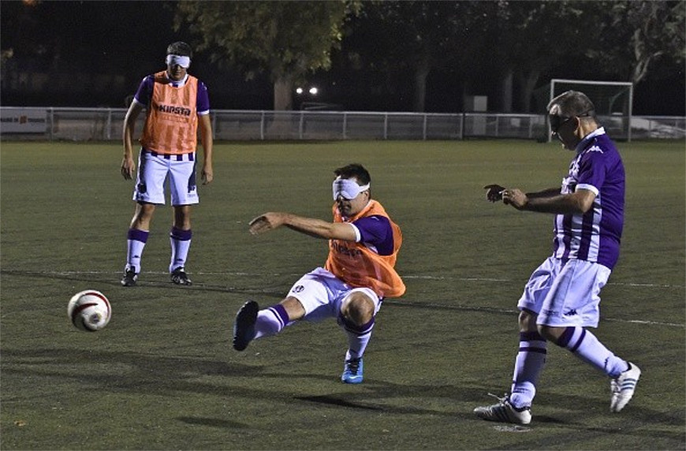

atletismo

El atletismo es parte del programa de los Juegos Paralímpicos de una primera edición en Roma en 1960. Pero fue sólo en 1984 que Brasil ganó como primeras medallas en el deporte en Nueva York (EE.UU.) y el Stoke Mandeville (Inglaterra). Ese año, el país ganó seis medallas de oro, 12 de plata y tres de bronce no el atletismo. En total, el país ha ganado 109 medallas en Juegos Paralímpicos, los cuadrados 32 de oro, 47 de plata y 30 de bronce.
Judo

Judo FUE Una primera modificacion origen asiático insertado en el programa paralímpico. Este deporte es practicado por los atletas con discapacidad visual Côn Alguna Estrecha y en los Juegos en la edición Paralímpicos de Seúl 1988, Plumas con la forma en disputas en el varón. Las mujeres entran en la linea de los Juegos de Atenas, en 2004. En Brasil, (CBDV) como a nivel mundial, El judo es administrado por la Federación Internacional de Deportes para Ciegos (IBSA, siglas en ingles), fundada en París en 1981. Como Primeras medallas del judo paralímpico brasileño acaba de llegar en La premier de la modalidad de los Juegos Seúl 1988. Cinco judokas representaron el Brasil en la Corona del Sur y los Tres retomaron Bronces, ganadas por Jaime de Oliveira (60 kg), Julio Silva (65 kg) y Leonel Cunha (95 kg). El Primer Año en Atlanta 1996 con Antonio Tenorio da Silva (86 kg). Los Siguientes hijo, Tenorio se convirtió en el exponente alcalde del judo paralímpico nacional, como ganadora Cuatro medallas para orar que El País TIENE UNA modalidad en Paralimpíadas (Atlanta 1996, Sidney 2000, Atenas 2004 y Beijing 2008). En las mujeres, como medallas primarias also in El año en Que Fue Una categoría brasileña integrada en el programa de Límpico en Atenas 2004. Karla Cardoso (48 kg) y Daniele Silva (57 kg) victoria Una Plata Y Bronce de la ONU, respectivamente, n Una Grecia. En la última edición, los Juegos Paralímpicos de Londres en 2012, Brasil ganó tres de bronce, con Daniele Milán (63 kg) Michele Ferreira (52 kg) y Antonio Tenorio (100 kg),: Además de la Plata Lucía da Silva (57 kg). En total, el judo Tiene Salón 18 medallas Paralímpico, Siendo Cuatro oros, cinco dólares Y nueve bronces.
Futbol de Cinco
Fútbol para los discapacitados visuales, también conocido como el fútbol sala y el fútbol a cinco, es una adaptación de fútbol para atletas con discapacidades visuales, incluidos los ciegos. El deporte, que se rige por la Federación Internacional de Deportes para Ciegos (IBSA), se juega con reglas de la FIFA modificados. El campo de juego es más pequeña y rodeada por las juntas. Cada equipo tiene cinco jugadores, incluido el portero. Los equipos también pueden tener una guía que se coloca fuera del campo de juego, para ver a los jugadores que las impulsan. La pelota está equipado con un dispositivo que haga ruido para los jugadores y para situarla por el sonido. Los juegos constan de dos partes de 25 minutos cada una con un intervalo de 10 minutos. B1 - atletas en total o casi totalmente ciegos; de no percepción de luz a la percepción de la luz, pero con incapacidad para reconocer la forma de una mano. B2 - Los atletas con visión parcial; Pueden reconocer la forma de una mano con un 2/60 de la agudeza visual o campo visual de menos de 5 grados. B3 - Los atletas con visión parcial; agudeza visual de 2/60 a 6/60 o el campo visual de 5 a 20 grados. Los equipos pueden utilizar los atletas con visión como porteros / Portero y guías; los porteros / Portero con la visión pueden no han sido registradas por la FIFA por un máximo de cinco años. Hay dos tipos de competencia. Juegos para la clase B1, sólo se permiten los atletas de la clase B1, a excepción de los porteros y las guías, que pueden ser de la clase B2, B3 o ver. Juegos de Clases B2 / B3, los equipos pueden alinear con jugadores de las clases B2 y B3; al menos dos jugadores deben estar campo B2 Clase al mismo tiempo. Los cinco fútbol en Europa se ha desarrollado en España. El primer campeonato nacional español se llevó a cabo en suelo español en 1986. En América del Sur, hay registros de un torneo brasileño organizado en 1980. El Campeonato de América y Europa comenzaron en 1997, seguido por el primer campeonato del mundo en 1998. Deporte se añadió a los Juegos Paralímpicos de verano en 2009 Brasil fue el campeón del mundo en 1998, 2000 y 2010, [1] y Argentina ganó en 2002 y 2006. En los Juegos Olímpicos Especiales, Brasil fue campeón en 2004, 2008, 2012 y 2016.